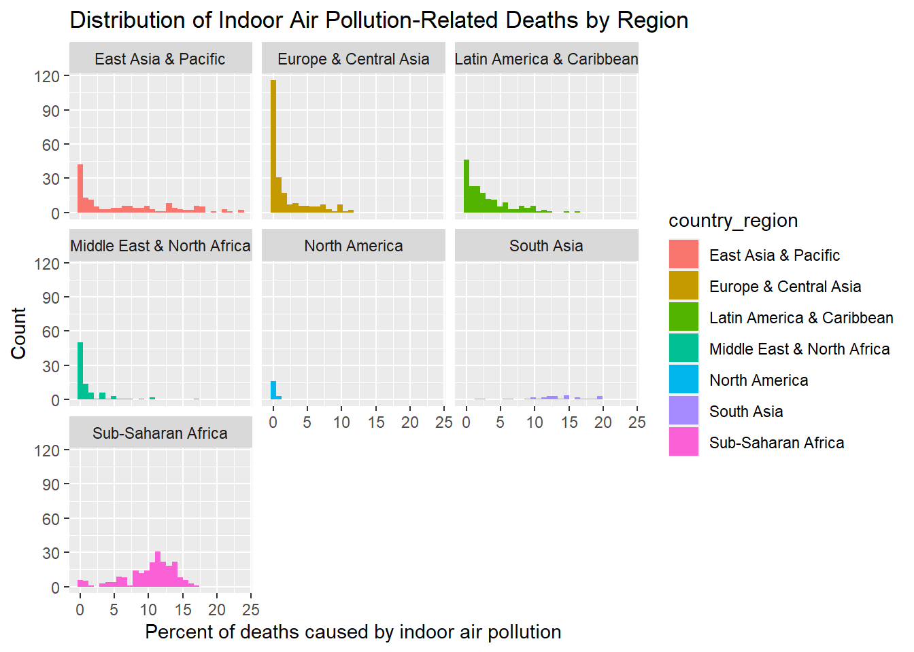

Since the earliest days of thinking about the dangers associated with pollution in the air, much of the conversation has been focused on the risks associated with our infrastructure –vehicles, energy, and manufacturing at the forefront. More recently, it is becoming more apparent that we are also in need of considering the risks associated with out indoor air pollutants, which is now understood to be a source of premature deaths worthy of concern.
WHO suggests indoor air pollutants can become well over 100x more concentrated in large, poorly ventilated indoor spaces both public and private. On top of that, it has been documented that people living in developed regions spend 80-90% of our lives indoors.
Some reports suggest as much as three billion individuals are impacted by toxic indoor air pollutants every day, with as many as 3.8 million deaths yearly being attributed to IAP exposure.
Defining indoor Air Pollutants
Volatile Organic Compounds: emitted from common household items such as aerosol cleaners, plastic products, furniture, paints, candles/scented items, adhesives, and many other products. VOC’s are the least understood of the indoor air pollutants, and many have still yet to be identified, let alone medically understood.
The five most common VOCs include benzene, formaldehyde, methylene chloride, tetrachloroethylene, toluene, xylene and 1,3-butadiene
Particulate matter: Dust, smoke, dirt, and other small particles created from many sources and suspended in moving air. Some of the most significant to indoor air pollution tend to be combustion from cooking, heating, or smoking. PM ranges from a mild irritant to major carcinogen, depending on the source.
burning bio fuels like wood or crops produce significantly more hazardous particulate matter then fuels like ethenol or even biodiesel. Wood contains heavy metals like arsenic, cadmium, and lead that can accumulate in soils and then get taken up into the air, as well as producing dust and ash from the incomplete combustion process.
Nitrogen Oxides: Also an aspect of bio fuel combustion, NOx compounds are a known to have significant negative health affects affecting the respiratory and cardiovascular system, which has been linked to asthma, bronchitis, eye/skin/throat irritation, headaches & nausea as well as a weakened immune system
Carbon monoxide/dioxide: Both carbon monoxide and dioxide are hazardous in large concentration and produced by the combustion of all fuels, including gas. Carbon monoxide can be particularly dangerous, with hundreds of deaths still caused in the US by accidental CO poisoning.
Radon: Second leading cause of lung cancer globally, radon is naturally released by soil, rocks, and water, which can release slowly and build up inside poorly ventilated homes.
Attaching package: 'janitor'
The following objects are masked from 'package:stats':
chisq.test, fisher.test
library(magrittr)
Attaching package: 'magrittr'
The following object is masked from 'package:purrr':
set_names
The following object is masked from 'package:tidyr':
extract
Rows: 8010 Columns: 4
── Column specification ────────────────────────────────────────────────────────
Delimiter: ","
chr (2): Entity, Code
dbl (2): Year, Deaths - Cause: All causes - Risk: Household air pollution fr...
ℹ Use `spec()` to retrieve the full column specification for this data.
ℹ Specify the column types or set `show_col_types = FALSE` to quiet this message.
Quick Summary of Data – Finding the Variables Present in the Data Set
iap_splits <-initial_split(indoor_pollution, prop =0.15,pool =1) exploratory_data <-training(iap_splits)test_data <-testing(iap_splits)head(exploratory_data) %>%rename(percent_deaths_by_household_pollution = deaths_cause_all_causes_risk_household_air_pollution_from_solid_fuels_sex_both_age_age_standardized_percent) %>%#shorten the long name kable(digits =c(1,0,0,4)) %>%kable_styling(bootstrap_options =c("hover", "striped"))
entity
code
year
percent_deaths_by_household_pollution
Liberia
LBR
1992
13.0093
Mongolia
MNG
1996
11.5099
America
NA
1999
1.7838
Mauritius
MUS
2010
0.3199
Morocco
MAR
2007
2.9917
Cambodia
KHM
1992
17.9062
Observation:
This data set contains variables gathered across multiple years, listing the percent of deaths caused by indoor air pollutants created from indoor combustion. Given the amount of data present in this dataset, several potential hypotheses could likely be considered.
The data, listed by country and region, are mixed in the dataset and will likely require some cleaning to separate. categorical data and contains variables that were collected over many years.
Depending on the scope of research, it may be more useful to focus on the dataset containing regional data rather than country-specific to highlight what role climate plays in the effect of indoor air pollution.
In temperate climates, it is more likely to use biofuels for heating as well as cooking. Alongside the availability of insulation material for homes that reduced the ability for indoor and outdoor atmosphere gas exchange, this may be an essential factor that could be compared with this data.
Using the temporal variable that is available in this data, some conclusions could be made about the
focusing on the countries rather than regions in this data could be used to show how countries that have invested in new technologies or better homes could correlate with either improved or worsened indoor air quality. Suppose homes are made more insulated but old gas stoves and wood fires are built into them. In that case, it is possible that the data could show up to a point a worsened impact on indoor air quality is associated with a country’s growth in economic opportunity.
exploratory_data %>%mutate(country_region =countrycode(entity, origin ="country.name", destination ="region")) %>%group_by(country_region) %>%summarize("Lowest percentage of deaths"=min(deaths_cause_all_causes_risk_household_air_pollution_from_solid_fuels_sex_both_age_age_standardized_percent),"Highest percentage of deaths"=max(deaths_cause_all_causes_risk_household_air_pollution_from_solid_fuels_sex_both_age_age_standardized_percent),"average percentage of deaths"=mean(deaths_cause_all_causes_risk_household_air_pollution_from_solid_fuels_sex_both_age_age_standardized_percent),"Standard deviation"=sd(deaths_cause_all_causes_risk_household_air_pollution_from_solid_fuels_sex_both_age_age_standardized_percent)) %>%kable(digits =c(1,3,1,2,1)) %>%kable_styling(bootstrap_options =c("hover", "striped"))
Warning: There was 1 warning in `mutate()`.
ℹ In argument: `country_region = countrycode(entity, origin = "country.name",
destination = "region")`.
Caused by warning in `countrycode_convert()`:
! Some values were not matched unambiguously: Africa, African Region, African Union, America, Andean Latin America, Asia, Australasia, Caribbean, Central Asia, Central Europe, Central Europe, Eastern Europe, and Central Asia, Central Latin America, Central sub-Saharan Africa, Commonwealth, Commonwealth High Income, Commonwealth Low Income, Commonwealth Middle Income, East Asia, East Asia & Pacific - World Bank region, Eastern Europe, Eastern Mediterranean Region, Eastern sub-Saharan Africa, England, Europe, Europe & Central Asia - World Bank region, European Region, European Union, G20, High-income, High-income Asia Pacific, High-income North America, High-middle SDI, High SDI, Latin America & Caribbean - World Bank region, Low-middle SDI, Low SDI, Micronesia (country), Middle East & North Africa, Middle SDI, Nordic Region, North Africa and Middle East, North America, Northern Ireland, Oceania, OECD Countries, Region of the Americas, Scotland, South-East Asia Region, South Asia - World Bank region, Southeast Asia, Southeast Asia, East Asia, and Oceania, Southern Latin America, Southern sub-Saharan Africa, Sub-Saharan Africa - World Bank region, Timor, Tropical Latin America, Western Europe, Western Pacific Region, Western sub-Saharan Africa, World, World Bank High Income, World Bank Low Income, World Bank Lower Middle Income, World Bank Upper Middle Income
country_region
Lowest percentage of deaths
Highest percentage of deaths
average percentage of deaths
Standard deviation
East Asia & Pacific
0.005
23.3
7.08
7.3
Europe & Central Asia
0.002
13.1
1.62
2.7
Latin America & Caribbean
0.002
16.4
2.85
3.5
Middle East & North Africa
0.001
15.7
1.58
2.8
North America
0.003
1.0
0.15
0.3
South Asia
3.422
19.7
14.19
4.5
Sub-Saharan Africa
0.103
17.3
10.58
3.9
NA
0.003
17.5
5.33
4.9
Note
Observations:
0.0016 % deaths is extremely low, especially compared to the maximum at 23%, and even the average of 5.57 shows a significant spread across datapoints this broad range suggests
This data does not provide particularly useful information since the data is not group by year. Potentially plotting the mean percentage across time could provide a useful visual to see how this data changes.
the maximum deaths at 23.04% is extremely high, and I am very curious at which country/region was measured this high– potentially an outlier?
5.77 standard deviation seems very large for the size of the data set being considered. This will be interesting to reference when seperating by country, region or year.
Warning: There was 1 warning in `mutate()`.
ℹ In argument: `country_region = countrycode(entity, origin = "country.name",
destination = "region")`.
Caused by warning in `countrycode_convert()`:
! Some values were not matched unambiguously: Africa, African Region, African Union, America, Andean Latin America, Asia, Australasia, Caribbean, Central Asia, Central Europe, Central Europe, Eastern Europe, and Central Asia, Central Latin America, Central sub-Saharan Africa, Commonwealth, Commonwealth High Income, Commonwealth Low Income, Commonwealth Middle Income, East Asia, East Asia & Pacific - World Bank region, Eastern Europe, Eastern Mediterranean Region, Eastern sub-Saharan Africa, England, Europe, Europe & Central Asia - World Bank region, European Region, European Union, G20, High-income, High-income Asia Pacific, High-income North America, High-middle SDI, High SDI, Latin America & Caribbean - World Bank region, Low-middle SDI, Low SDI, Micronesia (country), Middle East & North Africa, Middle SDI, Nordic Region, North Africa and Middle East, North America, Northern Ireland, Oceania, OECD Countries, Region of the Americas, Scotland, South-East Asia Region, South Asia - World Bank region, Southeast Asia, Southeast Asia, East Asia, and Oceania, Southern Latin America, Southern sub-Saharan Africa, Sub-Saharan Africa - World Bank region, Timor, Tropical Latin America, Western Europe, Western Pacific Region, Western sub-Saharan Africa, World, World Bank High Income, World Bank Low Income, World Bank Lower Middle Income, World Bank Upper Middle Income
Warning: There was 1 warning in `mutate()`.
ℹ In argument: `continent = countrycode(entity, origin = "country.name",
destination = "continent")`.
Caused by warning in `countrycode_convert()`:
! Some values were not matched unambiguously: Africa, African Region, African Union, America, Andean Latin America, Asia, Australasia, Caribbean, Central Asia, Central Europe, Central Europe, Eastern Europe, and Central Asia, Central Latin America, Central sub-Saharan Africa, Commonwealth, Commonwealth High Income, Commonwealth Low Income, Commonwealth Middle Income, East Asia, East Asia & Pacific - World Bank region, Eastern Europe, Eastern Mediterranean Region, Eastern sub-Saharan Africa, England, Europe, Europe & Central Asia - World Bank region, European Region, European Union, G20, High-income, High-income Asia Pacific, High-income North America, High-middle SDI, High SDI, Latin America & Caribbean - World Bank region, Low-middle SDI, Low SDI, Micronesia (country), Middle East & North Africa, Middle SDI, Nordic Region, North Africa and Middle East, North America, Northern Ireland, Oceania, OECD Countries, Region of the Americas, Scotland, South-East Asia Region, South Asia - World Bank region, Southeast Asia, Southeast Asia, East Asia, and Oceania, Southern Latin America, Southern sub-Saharan Africa, Sub-Saharan Africa - World Bank region, Timor, Tropical Latin America, Western Europe, Western Pacific Region, Western sub-Saharan Africa, World, World Bank High Income, World Bank Low Income, World Bank Lower Middle Income, World Bank Upper Middle Income
Warning in geom_histogram(mapping = aes(fill = country_region, x =
percent_deaths_by_household_pollution, : Ignoring unknown aesthetics: na.rm
`stat_bin()` using `bins = 30`. Pick better value with `binwidth`.

Observations
these graphs show variables taken across a range of 30 years where the number of deaths in the country attributed to indoor air pollution caused by the combustion of bio fuels. each graph represents a distribution of these variables grouped by region.
East Asia & Pacific contains a large distribution of countries with different rates of death. there is a larger amount of countries in east asia with a very low percentage of deaths for this cause.
Europe and Central Asia has the largest amount of variables measured at 0 percent deaths caused by IAP (over 125) compared to any other region. Nearly all variables in this region are below 10 percent deaths by IAP, but a fairly large amount of variables fall between 1% and 5%.
Latin America & Caribbean data is relatively spread out across 0% through 5% with over 100 countries in this group. there are a a smaller number of countries spread between 6% and 15% with no species over 15 percent.
Middle East and North Africa does not contain a large number of countries in the histogram (less then 100). The largest portion are between 0% and 5%, relatively low levels compared to other countries like East Asia and Sub-Saharan Africa.
North America is represented by the fewest countries of any region in this comparison. Considering that two of these countries are the U.S and Canada it is not suprising that there are a very low percentage of deaths per year caused by indoor air pollution.
South Asia is not represented by any countries that are 0 or even nearly 0% deaths caused by IAP from bio fuels. Although this region has ~50 variables, the % death ranges from a minimum of 4% to as high as 19%.
Sub-Saharan Africa is represented by a larger number of variables that are in the 5%-15% range. this region will likely provide an interesting year-to-year comparison that could show improvement over time.
because these variables are taken across such a wide temporal scale, it does not serve as a distinctly insightful comparison. Still, some things can be inferred.
exploratory_data %>%filter(year>2014) %>%rename(n = deaths_cause_all_causes_risk_household_air_pollution_from_solid_fuels_sex_both_age_age_standardized_percent) %>%mutate("Regions"=countrycode(entity, origin ="country.name", destination="region" )) %>%filter(!is.na(Regions)) %>%group_by(Regions) %>%summarize('Average Percent Deaths by Region'=mean(n),'Standard Deviation of % Deaths by Region'=sd(n),'Number of Variables Measured'=length(unique(entity))) %>%kable(digits =c(0,4,4,0)) %>%kable_styling(bootstrap_options =c("hover", "striped"))
Warning: There was 1 warning in `mutate()`.
ℹ In argument: `Regions = countrycode(entity, origin = "country.name",
destination = "region")`.
Caused by warning in `countrycode_convert()`:
! Some values were not matched unambiguously: Africa, African Union, America, Andean Latin America, Central Asia, Central Europe, Central Europe, Eastern Europe, and Central Asia, Central Latin America, Commonwealth, Commonwealth High Income, Commonwealth Middle Income, East Asia & Pacific - World Bank region, Eastern Europe, Europe, European Union, G20, High-income, High-income North America, High SDI, Latin America & Caribbean - World Bank region, Low-middle SDI, Low SDI, Micronesia (country), Middle East & North Africa, Middle SDI, North Africa and Middle East, North America, Northern Ireland, Region of the Americas, South-East Asia Region, South Asia - World Bank region, Southeast Asia, Southern Latin America, Southern sub-Saharan Africa, Sub-Saharan Africa - World Bank region, Western Pacific Region, Western sub-Saharan Africa
Regions
Average Percent Deaths by Region
Standard Deviation of % Deaths by Region
Number of Variables Measured
East Asia & Pacific
3.5370
5.2279
25
Europe & Central Asia
0.7319
1.1167
33
Latin America & Caribbean
1.5314
2.1116
21
Middle East & North Africa
0.5147
1.8123
13
North America
0.0463
0.0746
2
South Asia
12.1286
2.4940
3
Sub-Saharan Africa
7.9612
4.3686
18
Observations
This data summarizes the variables from only 2014-2019 to see a comparison of all the countries in recent years. Something that can be inferred from this data is that some countries have a significantly more significant standard deviation then others.
While South Asia and Sub-Saharan Africa have the highest average, the deviation is much smaller, suggesting most of the variables (countries) measured in this timespan are relatively close to the 10.00 % mean percent deaths by IAP
- East Asia & Pacific are significantly lower in percent deaths by IAP at nearly half of the previously mentioned, however, the standard deviation is over 1% greater then either South Asia or Sub-Saharan Africa, suggesting that some countries could be significantly worse off then most.
- although Middle East & North Africa does not have a particularly large standard deviation, it is the largest in comparison to its average. This Region along with Latin America & Caribbean do not fit this theory as nicely, and show the need for economic factors that play a role in deaths caused by pollution.
- This will be important for my hypothesis, since the geographic position of East Asia & pacific would likely make climate an interesting factor for comparison.
Regions with the lowest deviation from the mean were Europe & Central Asia as well as North America (despite lacking a standard deviation, it is only made up of 3 countries and likely deviated minimally
This data shows the distribution of variables across several years.
This spread suggests there is a lot of value in interpreting this data by year.
How do different regions compare to each other? What can be said about the rate of progress towards reducing the amount of deaths over the 30 years of data records?
Can environmental factors be considered? N. America has a lot of rich natural resources and mild climates that, among other factors, has enabled its success in terms of providing humanitarian needs to a large population.
areas where temperatures are very cold probably have more insulated homes burning bio fuels on top of cooking with combustion. Can a correlation be made suggesting that, despite economic wealth per capita, IAP caused by combustion is a bigger issue in Northern countries? This would likely only apply to countries that have not reached “western civilization” levels of wealth
It seems that the quantity of variables spread across this time span eliminates any hypothesis that would not involve a temporal comparison. If focusing on a single-year comparison becomes useful, it may be valuable to pick a year that contains the most variables, since they are not all the same.
exploratory_data %>%rename(n = deaths_cause_all_causes_risk_household_air_pollution_from_solid_fuels_sex_both_age_age_standardized_percent) %>%mutate("Regions"=countrycode(entity,origin ="country.name",destination="region")) %>%filter(!is.na(Regions)) %>%group_by(Regions) %>%ggplot(aes(x= year,y= n, group =1)) +geom_line() +facet_wrap(~Regions)+geom_smooth()
Warning: There was 1 warning in `mutate()`.
ℹ In argument: `Regions = countrycode(entity, origin = "country.name",
destination = "region")`.
Caused by warning in `countrycode_convert()`:
! Some values were not matched unambiguously: Africa, African Region, African Union, America, Andean Latin America, Asia, Australasia, Caribbean, Central Asia, Central Europe, Central Europe, Eastern Europe, and Central Asia, Central Latin America, Central sub-Saharan Africa, Commonwealth, Commonwealth High Income, Commonwealth Low Income, Commonwealth Middle Income, East Asia, East Asia & Pacific - World Bank region, Eastern Europe, Eastern Mediterranean Region, Eastern sub-Saharan Africa, England, Europe, Europe & Central Asia - World Bank region, European Region, European Union, G20, High-income, High-income Asia Pacific, High-income North America, High-middle SDI, High SDI, Latin America & Caribbean - World Bank region, Low-middle SDI, Low SDI, Micronesia (country), Middle East & North Africa, Middle SDI, Nordic Region, North Africa and Middle East, North America, Northern Ireland, Oceania, OECD Countries, Region of the Americas, Scotland, South-East Asia Region, South Asia - World Bank region, Southeast Asia, Southeast Asia, East Asia, and Oceania, Southern Latin America, Southern sub-Saharan Africa, Sub-Saharan Africa - World Bank region, Timor, Tropical Latin America, Western Europe, Western Pacific Region, Western sub-Saharan Africa, World, World Bank High Income, World Bank Low Income, World Bank Lower Middle Income, World Bank Upper Middle Income
`geom_smooth()` using method = 'loess' and formula = 'y ~ x'
Observations
These graphs seem to give some very valuable comparative evidence for both the value of region and time based analysis. Some things that can be seen as trends in this graph would be the downward trend downward that can be seen at the global scale.
Europe & Central Asia, Latin America & Caribbean ,Middle East & North Africa and North America were relatively low compared to East Asia & Pacific, South Asia and Sub-Saharan Africa.
East Asia & Pacific countries seem to have the greatest reduction in the percent deaths that were measured
While this is a global issue, there are clearly countries and regions that are significantly more impacted then others by the loss of life attributed to indoor air pollution and bio fuel combustion
Potential Hypothesis: Average % deaths decreased globally from 1990 - 2020
Potential Hypothesis: Temperate vs. Tropical regions will impact the IAP of developing countries
Warning: There was 1 warning in `mutate()`.
ℹ In argument: `Regions = countrycode(entity, origin = "country.name",
destination = "region")`.
Caused by warning in `countrycode_convert()`:
! Some values were not matched unambiguously: Africa, African Region, African Union, America, Andean Latin America, Asia, Australasia, Caribbean, Central Asia, Central Europe, Central Europe, Eastern Europe, and Central Asia, Central Latin America, Central sub-Saharan Africa, Commonwealth, Commonwealth High Income, Commonwealth Low Income, Commonwealth Middle Income, East Asia, East Asia & Pacific - World Bank region, Eastern Europe, Eastern Mediterranean Region, Eastern sub-Saharan Africa, England, Europe, Europe & Central Asia - World Bank region, European Region, European Union, G20, High-income, High-income Asia Pacific, High-income North America, High-middle SDI, High SDI, Latin America & Caribbean - World Bank region, Low-middle SDI, Low SDI, Micronesia (country), Middle East & North Africa, Middle SDI, Nordic Region, North Africa and Middle East, North America, Northern Ireland, Oceania, OECD Countries, Region of the Americas, Scotland, South-East Asia Region, South Asia - World Bank region, Southeast Asia, Southeast Asia, East Asia, and Oceania, Southern Latin America, Southern sub-Saharan Africa, Sub-Saharan Africa - World Bank region, Timor, Tropical Latin America, Western Europe, Western Pacific Region, Western sub-Saharan Africa, World, World Bank High Income, World Bank Low Income, World Bank Lower Middle Income, World Bank Upper Middle Income
model_region_temp <-linear_reg() %>%set_engine("lm") #construct model instancemodel_region_reg<-recipe(year~n,data = model_data)#generate a recipe -- what variables do we have in y = mx+bmodel_region<-workflow() %>%add_model(model_region_temp) %>%add_recipe(model_region_reg) #combine the model and recipe to generate a regression analysismodel_region_fit <- model_region %>%fit(model_data) model_region_fit %>%glance() %>%kable(digits=c(4,4,2,4,0,0,2,2,2,2,0,0)) %>%kable_styling(bootstrap_options =c("hover", "striped"))
r.squared
adj.r.squared
sigma
statistic
p.value
df
logLik
AIC
BIC
deviance
df.residual
nobs
0.0609
0.0598
8.56
60.1377
0
1
-3315.44
6636.88
6651.38
68001.27
928
930
# looking to build a regression analysis to determine if a correltion can be seen in the data. prediction is decreasing n over time grouped by region
Observations
This regression analysis provides some useful information that will be valuable to repeat with the entire data set.
r-squared value:describes the variance in independent value that is predictable by a dependent value.
For this test, the r-squared value suggests that between some percent of the deaths caused by IAP in this data set is explained by the year variable.
=
Hypothesis: Fuel combustion and Indoor Air Pollution
Considering the data that is present, their are two layers of analysis that could generate useful hypothesis for understanding the global impact of indoor air pollution. Considering the country-specific data, it may be valuable to try and find an additional data set for each layer to use for an additional comparison. These second data sets will be considered in thy hypothesis for each layer.
Layer One: Regions and Climates
The correlation that would be most interesting to explore would be between the regional characteristics in terms of climate and the type of winters that are common. Temperate regions are more likely to invest in indoor heating which often involved the use of bio fuels like wood stoves. Poor ventilation is also likely to be a component that will play a role in temperate regions being associated with greater % deaths by IAP.
Layer Two: Countries and Resources
It is likely that this data will show a correlation between countries with low economic resources having significantly higher rates of premature death to exposures that have been removed from developed country households
GDP is likely a strong contributing factor that does not even in tropical regions where ventilation is less of a concern, access to clean fuels is limited, indoor burning of fuels for cooking contributes to close proximity to the source of toxic compounds and heavy metals.
despite the likely correlation between a nations GDP and its percent deaths caused by IAP, it also seems the data will show an overall decrease in the 30yrs in every part of the world, but most noticeable in regions with high average percents.
Central America, South America, North Africa, South Asia, and the Pacific Islands are the regions that may not be correlated to climate, but contain significant number of countries with low GDP that contribute to IAP deaths.